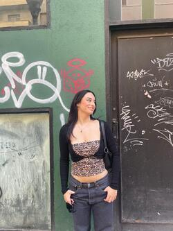

Soy Celia Barral Juárez, estudiante de la Universidad de Oviedo en el grado de Ingeniería Informática del Software y mi uo es 277578. Nací en Asturias, concretamente en Avilés y me siento afortunada por ello. Desde pequeña hasta ahora me ha gustado vivir en un sitio tan natural y con tanta variedad de costa y de montaña.
Actualmente tengo 22 años, y estoy en una etapa en la que disfruto mucho de viajar con mis amigos, conocer gente nueva y compartir mis aficiones como son el cine, la música y también salir a bailar. Si queréis poneros en contacto conmigo, mi correo profesional es uo277578@uniovi.es
| Año | 2013 | 2014 | 2015 | 2016 | 2017 | 2018 | 2019 | 2020 | 2021 | 2022 | 2023 |
|---|---|---|---|---|---|---|---|---|---|---|---|
| T ºC | 13.7 | 14.5 | 14.1 | 13.8 | 13.7 | 13.8 | 13.8 | 14.3 | 13.7 | 14.6 | 2023 |
Aquí podéis ver la caratura de La Doncella, que es una película dirigda por Park Chan-wook.
Tráiler